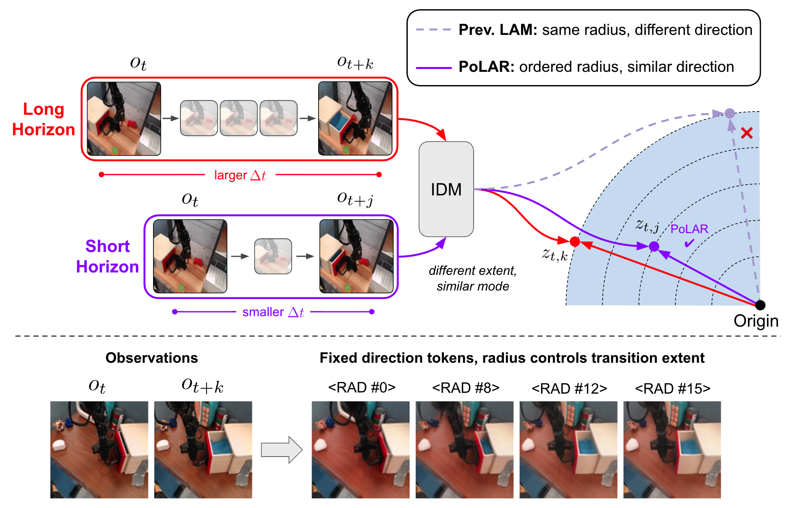
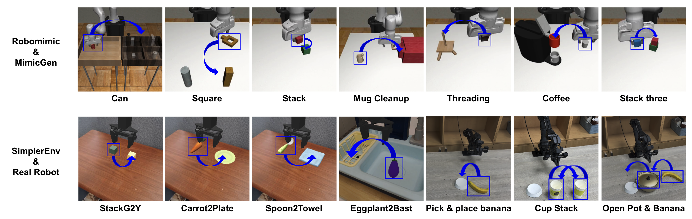
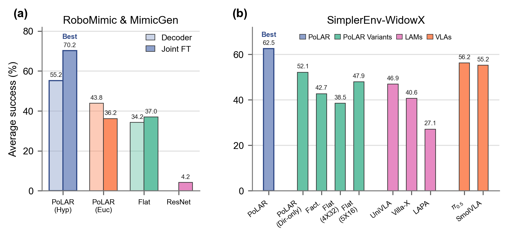
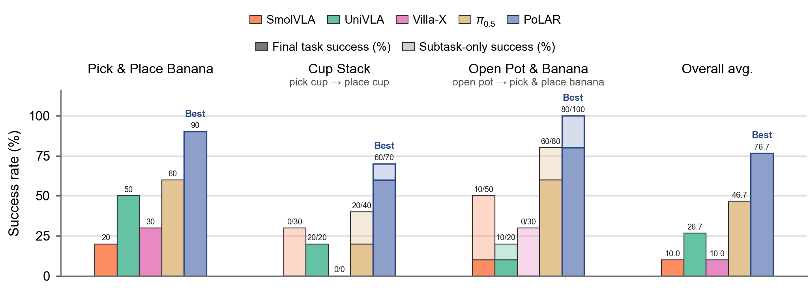
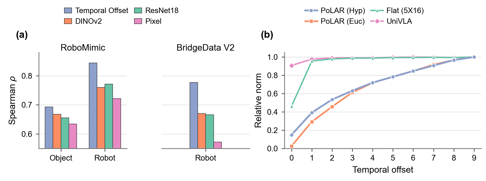
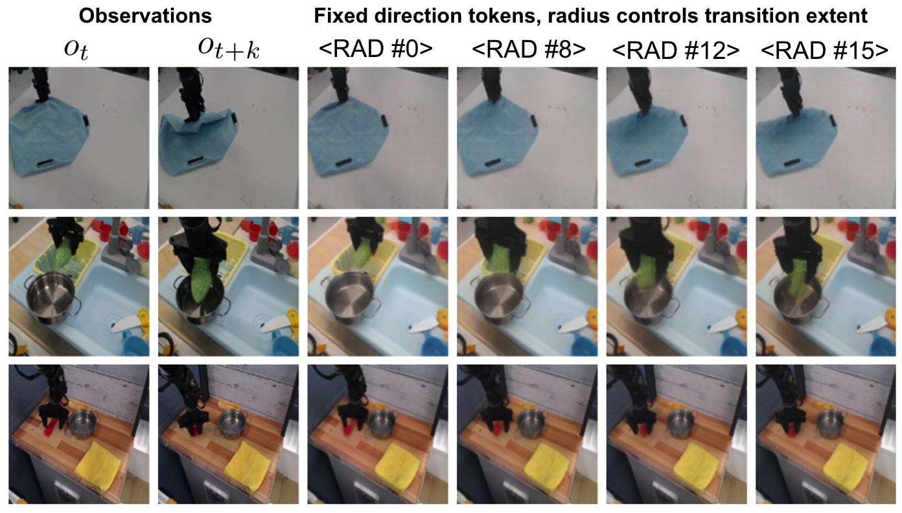
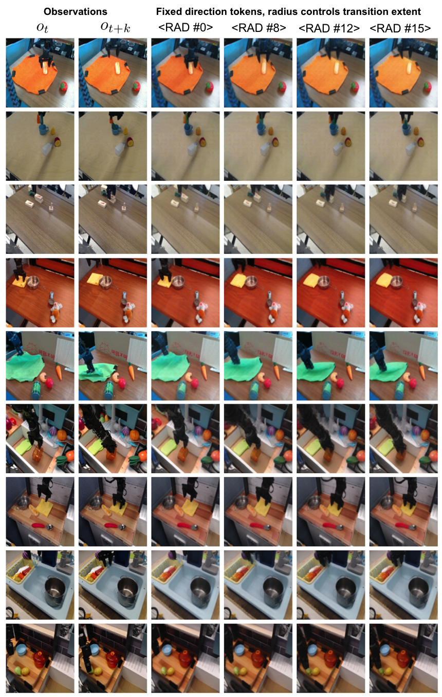

Latent action pretraining learns representations of visual change from pairs of observations, but existing methods typically encode each transition as a single unstructured representation that entangles transition extent and transition mode. We introduce Polar Latent Actions with Radial structure (PoLAR), which imposes a radial-direction structure on latent actions, encouraging radius to encode transition extent and direction to retain transition mode.
PoLAR uses temporal offset between two observations as a weak proxy for transition extent, encouraging latent action from observation pairs separated by larger temporal gaps to occupy larger radii. We instantiate this structure in hyperbolic space, whose expanding volume with radius offers a natural fit for more diverse transition modes at larger extents. Across in-task and large-scale pretraining settings, PoLAR improves downstream policy performance in simulation and real-world robot experiments, outperforming latent action baselines and strong pretrained VLAs.




Rollouts shown at 2x playback.
PoLARSuccess
PoLARSuccess
UniVLAFailed
Villa-XFailed
PoLARSuccess
PoLARSuccess
π0.5Failed
UniVLAFailed
PoLARSuccess
PoLARSuccess
UniVLAFailed
π0.5Failed
Public PoLAR checkpoints are available on Hugging Face.
Radial-direction latent action tokenizer pretrained on BridgeData V2.



@misc{jeong2026polar,
title = {PoLAR: Factorizing Extent and Mode in Latent Actions for Robot Policy Learning},
author = {Youngjoon Jeong and Jihwan Yu and Minsoo Jo and Junha Chun and Taesup Kim},
year = {2026},
eprint = {2606.21139},
archivePrefix = {arXiv},
primaryClass = {cs.RO},
url = {https://arxiv.org/abs/2606.21139}
}